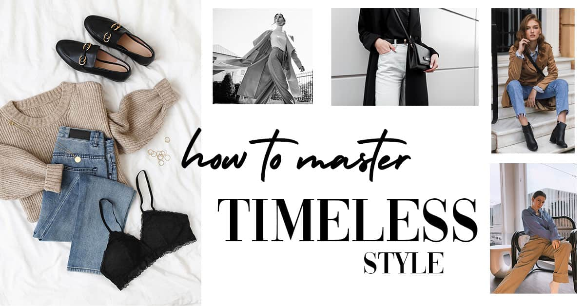
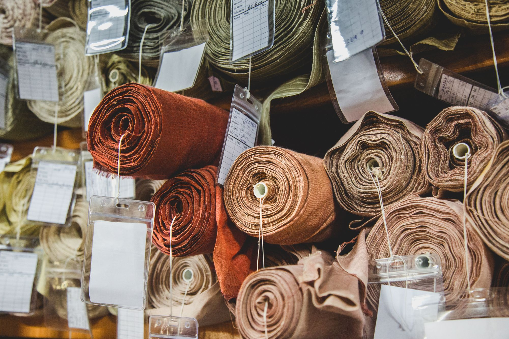

Do you find your closet overflowing with clothes, yet somehow you feel like you have nothing to wear? It's a common dilemma, but it's also a sign that it might be time to rethink your approach to fashion. Creating a sustainable wardrobe is not only good for the environment but can also simplify your life and help you develop a style that truly reflects who you are.
The first step to building a sustainable wardrobe is to take stock of what you already have. Go through your clothes and assess what you wear regularly, what you rarely wear, and what no longer fits or suits your style. Donate or recycle items that you no longer need.
Avoid falling into the fast fashion trap by investing in timeless, high-quality pieces that won't go out of style. Think classic denim, a well-tailored blazer, or a little black dress. These items can be the foundation of a versatile and enduring wardrobe.
Consider shopping for second-hand or vintage clothing. Thrifting is not only budget-friendly but also eco-friendly. It gives clothing a second life and reduces the demand for new production, helping to combat fashion waste.
Opt for clothing made from sustainable fabrics such as organic cotton, linen, hemp, or Tencel. These materials have a lower environmental impact compared to conventional fabrics and often last longer.
Extend the life of your clothes by learning basic clothing maintenance skills. Mend small tears, sew on missing buttons, and follow care instructions to keep your garments in good condition. It's a simple but effective way to reduce fashion waste.
By following these steps, you can build a sustainable wardrobe that reflects your personal style while minimizing your impact on the environment. Remember, it's not about having more clothes; it's about having the right ones.
Read More Articles